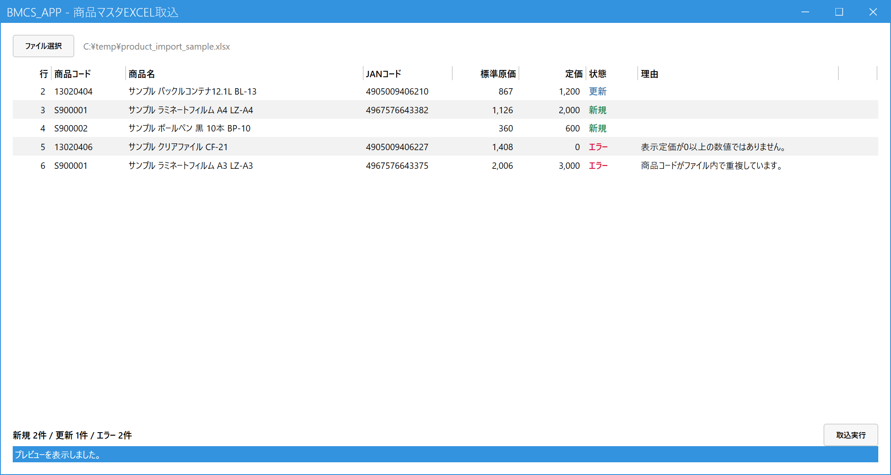

商品をExcelから取り込む（管理者）
こんなときに使います
Excel（.xlsx）の商品一覧から、商品マスタをまとめて登録・更新します。新しい商品の一括登録や、原価・定価の一括更新に使います。
Excel（.xlsx）の商品一覧から、商品マスタをまとめて登録・更新します。新しい商品の一括登録や、原価・定価の一括更新に使います。
管理者専用の画面です。権限レベル8以上の社員にだけメニューに表示されます。取り込むと商品マスタをまとめて書き換えるので、実行前にプレビューを必ず確認してください。
1.Excelファイルを読み込む
メインメニューの「システム設定」の中の「商品マスタExcel取込」を開き、「ファイル選択」を押してExcelファイルを選びます（画面にファイルをドラッグ＆ドロップしてもかまいません）。読み込むと、取り込む前のプレビューが表示されます。この時点では、まだ何も登録されていません。

- ファイル選択：Excelファイル（.xlsx）を選ぶ。Excelで開いたままでも読み込めます。
- 状態：新規（緑）は新しく登録、更新（青）は登録済みの商品を上書き、エラー（赤）は取り込まれません。
- 理由：エラーの理由が出ます。この例は、定価が数値でない行と、同じ商品コードが2回出てくる行です。
- 新規・更新・エラーの件数のまとめです。
- 取込実行：エラー以外の行を商品マスタへ取り込みます。
2.取り込む
- プレビューでエラーの行と、更新される商品を確認します。
- 取込実行を押し、確認メッセージで「はい」。エラー以外の行が取り込まれ、画面の下に件数（新規・更新）が出ます。
- 同じ読み込み結果で続けて取り込むことはできません。もう一度取り込むときは、ファイルを読み込み直します。
全件まとめて1回で保存します。途中で失敗したときは1件も反映されません（一部だけ変わった状態にはなりません）。エラーの行は取り込まれず、ほかの行だけが取り込まれます。
3.何が変わり、何が変わらないか
登録済みの商品コードが入っていた場合は、次の4項目だけを上書きします。ほかの項目は、商品マスタで直した内容がそのまま残ります。
| 項目 | 新しい商品（新規） | 登録済みの商品（更新） |
|---|---|---|
| 商品名 | Excelの内容を登録 | 上書きされる |
| JANコード | Excelの内容を登録（空ならなし） | 上書きされる（Excelが空なら、空になります） |
| 標準原価 | Excelの内容を登録 | 上書きされる |
| 定価 | Excelの内容を登録 | 上書きされる |
| 商品名カナ・規格・単位 | 空 | 変わらない |
| 外税単価・内税単価 | 0 | 変わらない |
| 税種別区分 | 通常税率 | 変わらない |
| 主仕入先 | なし | 変わらない |
| 無効（削除）の状態 | 有効 | 変わらない（無効の商品は、更新後も無効のまま） |
新規の商品は、取込のあとに商品マスタでカナ・規格・単位・単価・税種別・主仕入先を入れてください。税種別が軽減税率の商品などは、取込では「通常税率」になるので、直す必要があります。
4.Excelファイルの作り方
1行目に見出しを書き、2行目からデータを書きます。列は見出しの名前で探すので、列の順番は問いません。ほかの列（メーカー名など）があっても無視されます。ファイルに複数のシートがあるときは、下の見出しがすべて揃った最初のシートを読みます。
| 見出し（1行目） | 取り込み先 | 書き方 |
|---|---|---|
| 商品コード | 商品コード | 必須。20文字まで。同じファイルの中で重複しないこと。 |
| ブランド名 | 商品名 | 3つの列を半角スペースでつないだものが商品名になります（例：「サンプル」「ボールペン 黒」「BP-10」→「サンプル ボールペン 黒 BP-10」）。空の列は詰めます。つないだ結果が200文字までで、空でないこと。 |
| 商品名 | ||
| 品番 | ||
| JANコード | JANコード | 13文字まで。空でもかまいません。 |
| 最新価格相当 | 標準原価 | 必須。0以上の数値。 |
| 表示定価 | 定価 | 必須。0以上の数値（定価を決めない商品は0）。 |
- 前後の空白（全角を含む）は取り除かれます。セルの内容が文字列の「NULL」のときは、空として扱います（ブランド名が無い商品など）。
- 商品コードやJANコードが数値のセルでも、そのままの数字で取り込まれます（先頭の0が消えるので、0で始まるコードは文字列のセルにしてください）。
- 全部の列が空の行は無視されます。
- 見出しが揃ったシートが無いときは、画面にエラーが出て、取り込めません。
エラーの見方と対処
| 表示される理由 | 対処 |
|---|---|
| 商品コードが空です／20文字を超えています | Excelの商品コードを直して、読み込み直します。 |
| 商品コードがファイル内で重複しています | 2回目以降の行がエラーになります。重複を整理して読み込み直します。 |
| 商品名が空です／200文字を超えています | ブランド名・商品名・品番のいずれかを入れる、または短くします。 |
| JANコードが13文字を超えています | JANコードを直します。 |
| 最新価格相当／表示定価が0以上の数値ではありません | 数値（0以上）にします。空欄・文字・マイナスはエラーです。 |
| 無効化済みの商品（更新後も無効のまま） | エラーではなく注意です。有効にしたいときは、商品マスタで直します。 |